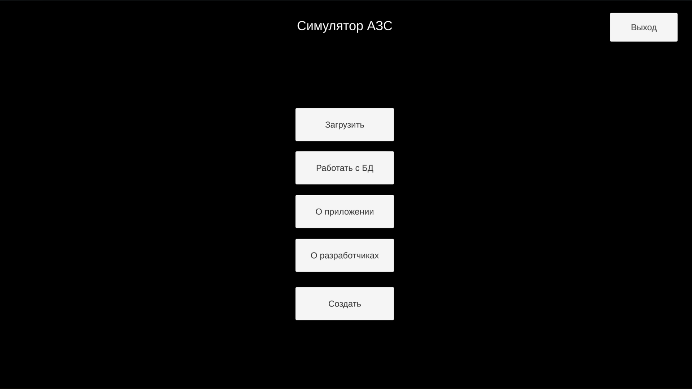
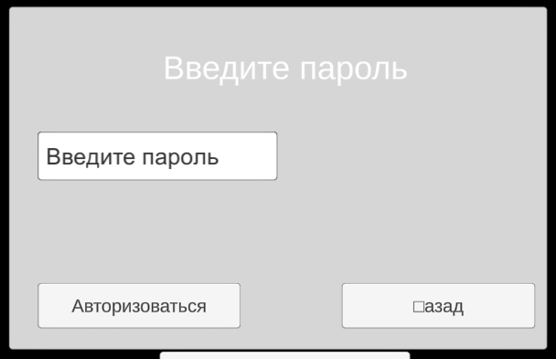
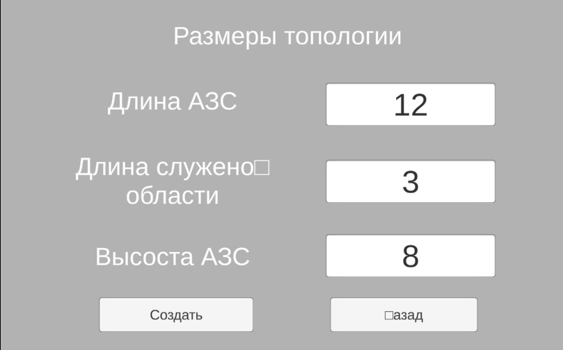
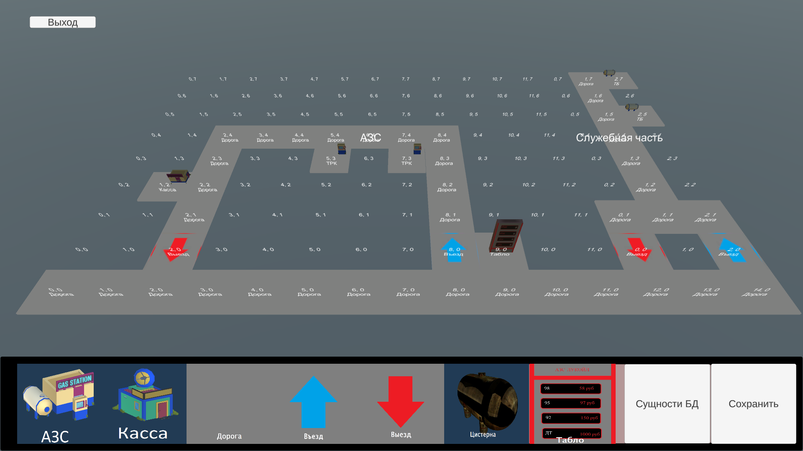
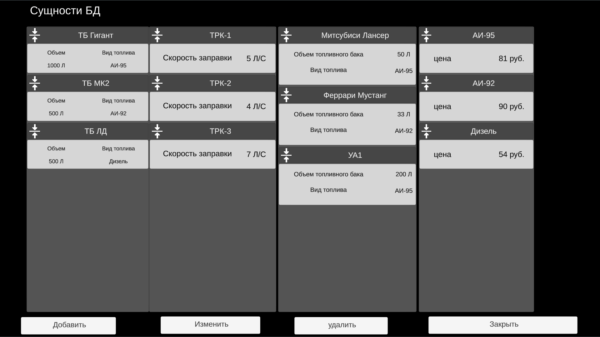
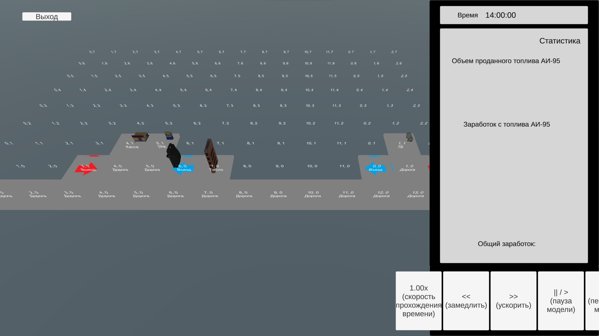

Система используется для создания топологий АЗС и моделирования
транспортного потока. Позволяет создавать топологии АЗС с помощью конструктора,
устанавливать необходимые параметры объектов АЗС, и проводить моделирование
на созданных топологиях.
Программа совместима с ОС Windows 7 и выше.
Функции системы:
Основными функциями администратора являются:
Основными функциями менеджера являются:
Для запуска программы, просто дважды кликните на .exe файл. При запуске отобразится главное меню приложения:

Для того, чтобы создать новую топологию или работать с БД, для начала нужно авторизоваться как администратор. Окно авторизации появляется при нажатии кнопки "Создать" или "Работать с БД" из главного меню.

Если пароль верен, то пользователя, который авторизовался как администратор, переносит на сцену конструирования топологии, если он нажал кнопку "Создать", или на сцену работы с БД, если он нажал "Работать с БД".
Перед началом конструирования требуется задать размеры сетки АЗС.

После чего приложение переходит на сцену конструирования топлогии. Здесь администратор может выбирать из списка объектов объекты, распологать их на сетке, задавать их параметры.

После размещения объектов их можно копировать и удалять. Объекты можно поворачивать. Нажав на объект на сетке, выводится информация о нём.
Из этой же сцены также возможно перейти в сцену работы с БД.
При нажатии на кнопки "Работать с БД" из главного меню или из конструктора топологий, отобразится сцена работы с БД.

В сцене отображается окно со всеми типами сущностей, а также уже существующие элементы в нём. В это сцене возможно:
Для того, чтобы производить эти действия с каким-либо типом сущностей, для начала требуется нажать ЛКМ на одну из панелей сущностей. После этого названия кнопок изменятся и будет производиться действия только с этим типом сущностей. Чтобы поменять тип, нужно нажать ЛКМ на другую требуемую сущность.
Для окончания работы с БД нужно нажать на кнопку "Закрыть", которая закрывает сцену.
Чтобы перейти в моделирование, для начала нужно загрузить топологию. Для этого из главного меню нужно нажать на кнопку "Загрузить", и откроется меню выбора сохранённых топологий. После выбора, откроется сцена настройки транспотного потока.
В сцене можно выбрать тип потока, а также настроить закон распределения для недетерминированного потока.

В ходе настройки необходимо правильно заполнить
В сцене симуляции можно провести моделирование работы АЗС на выбранной топологии. Для начала требуется запустить модель нажатием кнопки "Старт".

Во время симуляции на панели справа отображается статистика. Симуляцию можно ускорять, замедлять и ставить на паузу. При желании симуляцию можно останавливать и перезапускать кнопкой "Стоп".
По нажатию по кнопке "Выход", осуществляется выход в ОС.